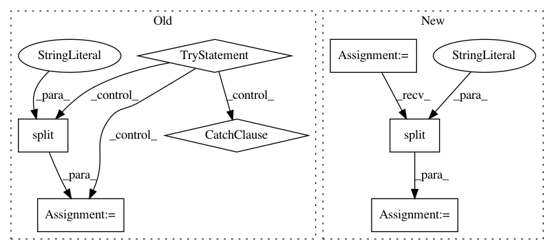

ef7e473d04352059c33af7bef48321e5dec7b3da,setup.py,,calculate_version,#,14
Before Change
// Fetch version from git tags, and write to version.py.
// Also, when git is not available (PyPi package), use stored version.py.
version_py = os.path.join(os.path.dirname(__file__), "version.py")
try:
version_git = subprocess.check_output(["git", "tag"]).rstrip().split("\n")[-1]
except Exception:
with open(version_py, "r") as fh:
version_git = (open(version_py).read()
.strip().split("=")[-1].replace(""", ""))
version_msg = ("// Do not edit this file, pipeline versioning is "
"governed by git tags")
with open(version_py, "w") as fh:
fh.write(version_msg + os.linesep + "__version__=" + version_git)
After Change
def calculate_version():
initpy = open("tpot/__init__.py").read().split("\n")
version = next(filter(lambda x: "__version__" in x, initpy)).split("\"")[1]
return version
requirements = parse_requirements("requirements.txt")
In pattern: SUPERPATTERN
Frequency: 3
Non-data size: 7
Instances
Project Name: EpistasisLab/tpot
Commit Name: ef7e473d04352059c33af7bef48321e5dec7b3da
Time: 2015-11-13
Author: rso@randalolson.com
File Name: setup.py
Class Name:
Method Name: calculate_version
Project Name: home-assistant/home-assistant
Commit Name: 754d536974fccd0768b90938d79071ba0910714a
Time: 2016-10-21
Author: martin@dasos.com
File Name: homeassistant/components/media_player/squeezebox.py
Class Name: LogitechMediaServer
Method Name: get_player_status
Project Name: GoogleCloudPlatform/PerfKitBenchmarker
Commit Name: 225d31587eeb9aca226158e346c8e9730777913c
Time: 2017-02-24
Author: nlavine@google.com
File Name: perfkitbenchmarker/publisher.py
Class Name:
Method Name: RepublishJSONSamples